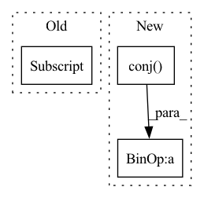

Pattern ID :7244
Before Change
iRnn = torch.linalg.inv(iRnn)
ifc = torch.view_as_complex(ifc.unflatten(3, (self.frame_size, 2)))
if self.normalize_ifc:
ifc0 = ifc[..., -1]
ifc = ifc / (ifc0.unsqueeze(-1) + self.eps)
spec_f = spec_u.narrow(-2, 0, self.num_freqs)
numerator = torch.einsum("...nm,...m->...n", iRnn, ifc) // [B, C, F, N]
denumerator = torch.einsum("...n,...n->...", ifc.conj(), numerator)After Change
numerator = torch.einsum("...nm,...m->...n", iRnn, ifc) // [B, C, F, N]
denumerator = torch.einsum("...n,...n->...", ifc.conj(), numerator)
// Normalize numerator
scale = ifc[..., -1, None].conj()
w = (numerator * scale / (denumerator.real.unsqueeze(-1) + self.eps)).unsqueeze(1)
spec_f = self.apply_coefs(spec_f, w)
if self.training:
spec = spec.clone()In pattern: SUPERPATTERN
Frequency: 4
Non-data size: 3
Instances Fragment ID: 24293747
Project Name: rikorose/deepfilternet
Commit Name: 7ca1b8c890bc20c778a2292d4a6f94918ce3106c
Time: 2022-11-14
Author: Rikorose@users.noreply.github.com
File Name: DeepFilterNet/df/multiframe.py
M Class Name: MfMvdr
N Class Name: MfMvdr
M Method Name: forward(4)
N Method Name: forward(4)
M Parent Class: MultiFrameModule
N Parent Class: MultiFrameModule
M File Name: DeepFilterNet/df/multiframe.py
N File Name: DeepFilterNet/df/multiframe.py
M Start Line: 372
M End Line: 381
N Start Line: 365
N End Line: 388
Before Change
// ytHy = np.dot(np.transpose(y),Hy)
ytHy = conj(y.T) @ Hy
sstfactor = max([rho*rho*ytHy + rho, 0])[0][0]
// sscaled = np.sqrt(sstfactor)*s
sscaled = np.sqrt(sstfactor)*s_gpu
// H_new = self.H - (conj(rhoHyst.T) + rhoHyst) + sscaled @ conj(sscaled.T)
H_new = H_gpu - (torch.conj(rhoHyst.t()) + rhoHyst) + sscaled @ torch.conj(sscaled.t())After Change
// ytHy could be < 0 if H not numerically pos def
// ytHy = np.dot(np.transpose(y),Hy)
ytHy = torch.conj( y.t()) @ Hy
sstfactor = max([rho*rho*ytHy + rho, 0]).item()
// sscaled = np.sqrt(sstfactor)*s
sscaled = np.sqrt(sstfactor)*s Fragment ID: 24293750
Project Name: sun-umn/pygranso
Commit Name: e6eaf9a3e06081f72c5e065a9f7b637f84ee2fdd
Time: 2021-09-09
Author: 52502144+Buyun-Liang@users.noreply.github.com
File Name: private/bfgsHessianInverse.py
M Class Name: H_obj_struct
N Class Name: H_obj_struct
M Method Name: update(5)
N Method Name: update(5)
M Parent Class:
N Parent Class:
M File Name: private/bfgsHessianInverse.py
N File Name: private/bfgsHessianInverse.py
M Start Line: 42
M End Line: 105
N Start Line: 42
N End Line: 106
Before Change
ifc = torch.view_as_complex(ifc.unflatten(3, (self.frame_size, 2)))
if self.normalize_ifc:
ifc0 = ifc[..., -1]
ifc0[:, 0] = 1
ifc = ifc / (ifc0.unsqueeze(-1) + self.eps)
spec_f = spec_u.narrow(-2, 0, self.num_freqs)
numerator = torch.einsum("...nm,...m->...n", iRnn, ifc) // [B, C, F, N]After Change
spec_u = self.spec_unfold(torch.view_as_complex(spec))
iRnn = torch.view_as_complex(iRnn.unflatten(3, (self.frame_size, self.frame_size, 2)))
if self.cholesky_decomp:
iRnn = iRnn * iRnn.transpose(3, 4).conj()
ifc = torch.view_as_complex(ifc.unflatten(3, (self.frame_size, 2)))
if self.normalize_ifc:
ifc0 = ifc[..., -1]
ifc = ifc / (ifc0.unsqueeze(-1) + self.eps) Fragment ID: 24293754
Project Name: rikorose/deepfilternet
Commit Name: 5bec85aa4fd3c02ad92247d0f9e2a6903f9a8aae
Time: 2022-10-20
Author: Rikorose@users.noreply.github.com
File Name: DeepFilterNet/df/multiframe.py
M Class Name: MfMvdr
N Class Name: MfMvdr
M Method Name: forward(4)
N Method Name: forward(4)
M Parent Class: MultiFrameModule
N Parent Class: MultiFrameModule
M File Name: DeepFilterNet/df/multiframe.py
N File Name: DeepFilterNet/df/multiframe.py
M Start Line: 285
M End Line: 286
N Start Line: 292
N End Line: 295
Before Change
if conjcoef:
coef = coef * table[d][:, distind[d, :] + centers[d]]
else:
coef = coef * tf.math.conj(table[d][:, distind[d, :] + centers[d]] )
arr_ind = arr_ind + tf.reshape(tf.math.floormod(gridind[d, :], dims[d]), [-1]) * \
tf.reduce_prod(dims[d + 1:])
After Change
else:
// TODO: work on the indexes that need to be on the second dimension
sliced_table = tf.gather_nd(table[d], distind[d, :] + centers[d])
coef = coef * tf.math.conj( sliced_table)
arr_ind = arr_ind + tf.reshape(tf.math.floormod(gridind[d, :], dims[d]), [-1]) * \
tf.reduce_prod(dims[d + 1:])
return coef, arr_ind Fragment ID: 24293755
Project Name: zaccharieramzi/tfkbnufft
Commit Name: 6eb3d8179056f3e7953b8edc5c785f8cee27cb59
Time: 2020-03-01
Author: zaccharie.ramzi@gmail.com
File Name: tfkbnufft/nufft/interp_functions.py
M Class Name: AnonimousClass
N Class Name: AnonimousClass
M Method Name: calc_coef_and_indices(8)
N Method Name: calc_coef_and_indices(8)
M Parent Class:
N Parent Class:
M File Name: tfkbnufft/nufft/interp_functions.py
N File Name: tfkbnufft/nufft/interp_functions.py
M Start Line: 70
M End Line: 86
N Start Line: 70
N End Line: 85